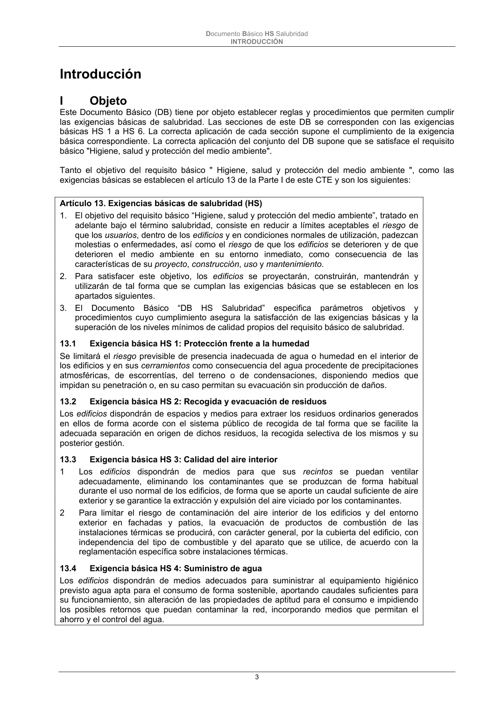

DB-HS Salubridad · edición 2022-06-14 · capa oficial
Documento DB-HS-oficial · SHA-256 del PDF 68df3caacc95f71aee2ec1ba7b2c65ae66155c21e3a8785521b8fdd4fd640d3b
Página física 3 de 184.
Copia fiel del PDF fuente · Fuente oficial
Ficha de la disposición en la fuente oficial
Formato: Texto de la página (Markdown)
Documento Básico HS Salubridad INTRODUCCIÓN 3 Introducción I Objeto Este Documento Básico (DB) tiene por objeto establecer reglas y procedimientos que permiten cumplir las exigencias básicas de salubridad. Las secciones de este DB se corresponden con las exigencias básicas HS 1 a HS 6. La correcta aplicación de cada sección supone el cumplimiento de la exigencia básica correspondiente. La correcta aplicación del conjunto del DB supone que se satisface el requisito básico "Higiene, salud y protección del medio ambiente". Tanto el objetivo del requisito básico " Higiene, salud y protección del medio ambiente ", como las exigencias básicas se establecen el artículo 13 de la Parte I de este CTE y son los siguientes: Artículo 13. Exigencias básicas de salubridad (HS) 1. El objetivo del requisito básico “Higiene, salud y protección del medio ambiente”, tratado en adelante bajo el término salubridad, consiste en reducir a límites aceptables el riesgo de que los usuarios, dentro de los edificios y en condiciones normales de utilización, padezcan molestias o enfermedades, así como el riesgo de que los edificios se deterioren y de que deterioren el medio ambiente en su entorno inmediato, como consecuencia de las características de su proyecto, construcción, uso y mantenimiento. 2. Para satisfacer este objetivo, los edificios se proyectarán, construirán, mantendrán y utilizarán de tal forma que se cumplan las exigencias básicas que se establecen en los apartados siguientes. 3. El Documento Básico “DB HS Salubridad” especifica parámetros objetivos y procedimientos cuyo cumplimiento asegura la satisfacción de las exigencias básicas y la superación de los niveles mínimos de calidad propios del requisito básico de salubridad. 13.1 Exigencia básica HS 1: Protección frente a la humedad Se limitará el riesgo previsible de presencia inadecuada de agua o humedad en el interior de los edificios y en sus cerramientos como consecuencia del agua procedente de precipitaciones atmosféricas, de escorrentías, del terreno o de condensaciones, disponiendo medios que impidan su penetración o, en su caso permitan su evacuación sin producción de daños. 13.2 Exigencia básica HS 2: Recogida y evacuación de residuos Los edificios dispondrán de espacios y medios para extraer los residuos ordinarios generados en ellos de forma acorde con el sistema público de recogida de tal forma que se facilite la adecuada separación en origen de dichos residuos, la recogida selectiva de los mismos y su posterior gestión. 13.3 Exigencia básica HS 3: Calidad del aire interior 1 Los edificios dispondrán de medios para que sus recintos se puedan ventilar adecuadamente, eliminando los contaminantes que se produzcan de forma habitual durante el uso normal de los edificios, de forma que se aporte un caudal suficiente de aire exterior y se garantice la extracción y expulsión del aire viciado por los contaminantes. 2 Para limitar el riesgo de contaminación del aire interior de los edificios y del entorno exterior en fachadas y patios, la evacuación de productos de combustión de las instalaciones térmicas se producirá, con carácter general, por la cubierta del edificio, con independencia del tipo de combustible y del aparato que se utilice, de acuerdo con la reglamentación específica sobre instalaciones térmicas. 13.4 Exigencia básica HS 4: Suministro de agua Los edificios dispondrán de medios adecuados para suministrar al equipamiento higiénico previsto agua apta para el consumo de forma sostenible, aportando caudales suficientes para su funcionamiento, sin alteración de las propiedades de aptitud para el consumo e impidiendo los posibles retornos que puedan contaminar la red, incorporando medios que permitan el ahorro y el control del agua.
